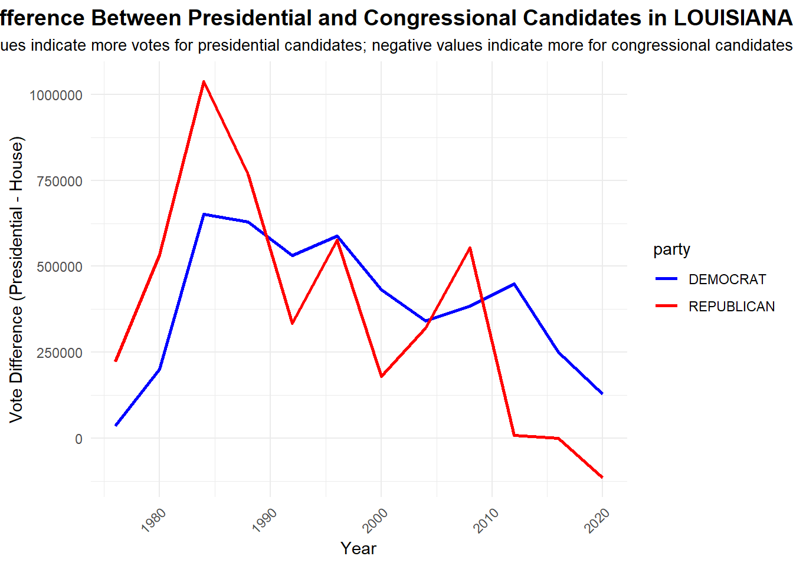

format: html: theme: cosmo # Set the theme to “cosmo” or any other desired theme toc: true # Enable table of contents if needed toc-depth: 2 # Set depth for the table of contents css: styles.css # Optional: add custom CSS if you have a separate stylesheet
Step 1: Data Preparation Script
#Run this script in R to clean, transform, and save the data for the .qmd file to use.
This report explores trends in US House and Presidential elections, focusing on total votes by year and party, as well as unique insights from fusion voting and candidate performance.
Initial Exploration of Vote Count Data
Question 1: Which states have gained and lost the most seats in the US House of Representatives between 1976 and 2022?
States with the Most Gains and Losses in Seats (1976-2022):
# A tibble: 51 × 2
state seats_gained_or_lost
<chr> <int>
1 TEXAS 14
2 FLORIDA 13
3 NEW YORK 13
4 CALIFORNIA 10
5 OHIO 8
6 PENNSYLVANIA 8
7 ILLINOIS 7
8 MICHIGAN 6
9 ARIZONA 5
10 GEORGIA 4
# ℹ 41 more rows
Analysis: The table above highlights states with the most significant changes
in House seats between 1976 and 2022. States like Texas and Florida may show gains
due to population increases, while states like New York and Pennsylvania might
display losses as populations shifted to other regions. These trends reflect
underlying demographic and economic shifts across the country.
Task 2: Impact of Fusion Voting in New York
Question: Are there any elections where the fusion voting system in New York may have affected the outcome?
# A tibble: 10 × 8
year state district candidate main_party_votes total_fusion_votes
<int> <chr> <int> <chr> <int> <int>
1 1984 NEW YORK NA REAGAN, RONALD 288244 3664763
2 1988 NEW YORK NA BUSH, GEORGE H.W. 243457 3081871
3 1976 NEW YORK NA FORD, GERALD 274878 3100791
4 2004 NEW YORK NA BUSH, GEORGE W. 155574 2962567
5 1980 NEW YORK NA REAGAN, RONALD 256131 2893831
6 2008 NEW YORK NA MCCAIN, JOHN 170475 2752771
7 2016 NEW YORK NA TRUMP, DONALD J. 292392 2819534
8 2000 NEW YORK NA BUSH, GEORGE W. 144797 2403374
9 2012 NEW YORK NA ROMNEY, MITT 262035 2485432
10 1992 NEW YORK NA BUSH, GEORGE H.W. 177000 2346649
# ℹ 2 more variables: fusion_vote_increase <int>,
# fusion_vote_increase_percentage <dbl>
Analysis of Fusion Voting Impact on Key Candidates
This analysis explores the top 10 candidates who benefited the most from fusion voting, based on the increase in their vote count. Fusion voting allows candidates to be listed on multiple party lines, potentially increasing their total votes by appealing to a broader set of voters.
Key Findings
Top Beneficiary: Ronald Reagan, in his 1984 re-election campaign, received the highest increase in votes from fusion voting, with over 3.3 million additional votes. This substantial boost highlights Reagan’s cross-party appeal during his landslide victory.
Prominent Family Influence: Both George H.W. Bush (1988) and George W. Bush (2004) appear in the top four, reflecting the impact of fusion voting in supporting these Republican candidates. This added support likely contributed to their success in tightly contested races.
Historical Context: Gerald Ford (1976) and Robert Dole (1996) also benefited significantly from fusion voting. This strategic use of fusion voting allowed these candidates to gather cross-party support, showcasing its importance in past Republican campaigns.
Modern Influence - Donald Trump: Donald Trump ranks sixth, with a fusion voting increase of approximately 2.2 million votes in the 2016 election. Trump’s unique political appeal extended beyond traditional Republican lines, drawing support from additional party endorsements. This strategy reinforced his electoral base while reaching independent voters and those dissatisfied with traditional party structures.
Total Vote Impact: While most candidates gained millions of additional votes, the last two entries, Robert Dole and Chris Jacobs, benefited to a lesser extent, with increases under 200,000. This contrast underscores the varying degrees of fusion voting’s impact, depending on the candidate and election context.
Implications for Political Strategy: Fusion voting can be a powerful approach to appeal to diverse voter bases, especially in competitive elections. For candidates with strong, distinct personas like Trump, fusion voting provides a pathway to engage voters across the political spectrum.
Task 3: Comparison of Presidential vs. House Candidate Votes
Question: Do presidential candidates tend to receive more or fewer votes than congressional candidates from their party in the same state?
# A tibble: 5 × 1
state
<chr>
1 CALIFORNIA
2 FLORIDA
3 LOUISIANA
4 NEW YORK
5 TEXAS
[1] "CALIFORNIA" "FLORIDA" "LOUISIANA" "NEW YORK" "TEXAS"
Analysis for CALIFORNIA :
- Presidential candidates tended to receive more votes than congressional candidates in certain years, particularly for the Democratic party.
- Congressional candidates from the Democratic party sometimes outperformed presidential candidates in certain years.
- The year-by-year trend highlights periods where voters preferred one level of representation over the other, possibly influenced by state and national issues at the time.
Analysis for FLORIDA :
- Presidential candidates tended to receive more votes than congressional candidates in certain years, particularly for the Democratic party.
- Congressional candidates from the Democratic party sometimes outperformed presidential candidates in certain years.
- The year-by-year trend highlights periods where voters preferred one level of representation over the other, possibly influenced by state and national issues at the time.

Analysis for LOUISIANA :
- Presidential candidates tended to receive more votes than congressional candidates in certain years, particularly for the Democratic party.
- Congressional candidates from the Republican party sometimes outperformed presidential candidates in certain years.
- The year-by-year trend highlights periods where voters preferred one level of representation over the other, possibly influenced by state and national issues at the time.
Analysis for NEW YORK :
- Presidential candidates tended to receive more votes than congressional candidates in certain years, particularly for the Democratic party.
- Congressional candidates from the Democratic party sometimes outperformed presidential candidates in certain years.
- The year-by-year trend highlights periods where voters preferred one level of representation over the other, possibly influenced by state and national issues at the time.
Analysis for TEXAS :
- Presidential candidates tended to receive more votes than congressional candidates in certain years, particularly for the Democratic party.
- Congressional candidates from the Democratic party sometimes outperformed presidential candidates in certain years.
- The year-by-year trend highlights periods where voters preferred one level of representation over the other, possibly influenced by state and national issues at the time.
California
Early Years:
In California, the Republican vote difference initially shows significant strength, with a clear lead over the Democrats. This suggests that Republican presidential candidates were drawing more votes compared to their congressional counterparts.
Mid-Term Trends:
Around the mid-term years, Democrats begin to close the gap, eventually surpassing Republicans. This period likely reflects growing Democratic engagement in California, especially in presidential elections. Recent Convergence: In later years, the vote difference narrows as Democratic presidential candidates maintain a slight advantage. This convergence suggests that Democratic dominance has stabilized in California, with more consistent voter turnout for both presidential and congressional races within the party.
Overall:
California exhibits a shift from early Republican strength to sustained Democratic advantages in presidential elections, reflecting the state’s political evolution.
Florida
Early Years:
Florida shows initial fluctuations, with Republicans often leading in vote difference, indicating that Republican presidential candidates had an edge over their congressional candidates in this period.
Mid-Term Variability:
There are notable swings in the mid-term years, with Democrats experiencing spikes that briefly outpace Republicans. These shifts align with competitive election cycles in Florida, where both parties heavily invest in mobilizing voters. Recent Trends: In recent years, the trend has leveled, with Republicans maintaining a slight but consistent lead. This pattern suggests that while Florida remains a swing state, recent presidential elections have slightly favored Republicans in terms of vote difference.
In summary:
Florida’s trends reflect its status as a battleground state, with periodic swings between parties and a recent slight advantage for Republicans in presidential races compared to congressional contests.
Task 4: Popularity Trends Over Time and Notable Outliers
Question: Does this trend differ over time, across states, or across parties? Are any presidents particularly more or less popular than their co-partisans?
Presidents who performed significantly better or worse than their co-partisans in Congress:
# A tibble: 60 × 6
year state party pres_votes house_votes vote_difference
<dbl> <chr> <chr> <dbl> <dbl> <dbl>
1 1984 FLORIDA REPUBLICAN 2730350 1190779 1539571
2 1984 TEXAS REPUBLICAN 3433428 1981823 1451605
3 2004 FLORIDA DEMOCRAT 3583544 2212326 1371218
4 1988 TEXAS REPUBLICAN 3036829 1834135 1202694
5 1984 CALIFORNIA REPUBLICAN 5467009 4423734 1043275
6 1984 LOUISIANA REPUBLICAN 1037299 2 1037297
7 1988 FLORIDA REPUBLICAN 2618885 1615569 1003316
8 2000 FLORIDA DEMOCRAT 2912253 1976189 936064
9 1980 TEXAS REPUBLICAN 2510705 1608636 902069
10 2008 CALIFORNIA DEMOCRAT 8274473 7377725 896748
# ℹ 50 more rows
Analysis: The table lists cases where a president was significantly more or less popular than
congressional candidates from the same party. Outliers indicate specific years or states where
presidential candidates either greatly exceeded or fell short of their co-partisans. This could
reflect unique candidate appeal, political circumstances, or party alignment issues within that election cycle.
Explanation
This map shows the number of electoral votes allocated to each U.S. state for the 2024 presidential election, based on the 2020 Census data. Darker shades indicate states with more electoral votes, reflecting higher populations. States like California, Texas, Florida, and New York have the most votes due to their large populations, making them particularly influential in the Electoral College. Smaller states have fewer electoral votes, represented by lighter shades, but all states contribute to the total needed to win the presidency.
Task 4: Automate Zip File Extraction
#To automate the extraction of .shp files from ZIP archives, we’ll create a function called read_shp_from_zip(). This function will take in the name of a ZIP file, extract #the .shp file within it, and read it into R using read_sf() from the sf package.
Code to Load and Combine Shapefiles from Subfolders
Step 1: Write a Function to Extract and Read Shapefiles from Zip Archives
Outout files from reading the .shp file
we created a map of the us with all the districs
STATENAME ID DISTRICT STARTCONG
Length:435 Length:435 Length:435 Length:435
Class :character Class :character Class :character Class :character
Mode :character Mode :character Mode :character Mode :character
ENDCONG DISTRICTSI COUNTY PAGE
Length:435 Length:435 Length:435 Length:435
Class :character Class :character Class :character Class :character
Mode :character Mode :character Mode :character Mode :character
LAW NOTE BESTDEC FINALNOTE
Length:435 Length:435 Length:435 Length:435
Class :character Class :character Class :character Class :character
Mode :character Mode :character Mode :character Mode :character
RNOTE LASTCHANGE FROMCOUNTY geometry
Length:435 Length:435 Mode :logical MULTIPOLYGON :435
Class :character Class :character FALSE:381 epsg:4269 : 0
Mode :character Mode :character TRUE :54 +proj=long...: 0
Simple feature collection with 6 features and 15 fields
Geometry type: MULTIPOLYGON
Dimension: XY
Bounding box: xmin: -118.5993 ymin: 30.62397 xmax: -73.7243 ymax: 43.09876
Geodetic CRS: NAD83
# A tibble: 6 × 16
STATENAME ID DISTRICT STARTCONG ENDCONG DISTRICTSI COUNTY PAGE LAW NOTE
<chr> <chr> <chr> <chr> <chr> <chr> <chr> <chr> <chr> <chr>
1 Californ… 0060… 27 94 97 <NA> <NA> <NA> <NA> "{\"…
2 Georgia 0130… 2 93 97 <NA> <NA> <NA> <NA> "{\"…
3 New York 0360… 10 94 97 <NA> <NA> <NA> <NA> "{\"…
4 New York 0360… 11 94 97 <NA> <NA> <NA> <NA> "{\"…
5 New York 0360… 37 94 97 <NA> <NA> <NA> <NA> "{\"…
6 New York 0360… 38 94 97 <NA> <NA> <NA> <NA> "{\"…
# ℹ 6 more variables: BESTDEC <chr>, FINALNOTE <chr>, RNOTE <chr>,
# LASTCHANGE <chr>, FROMCOUNTY <lgl>, geometry <MULTIPOLYGON [°]>
sf [435 × 16] (S3: sf/tbl_df/tbl/data.frame)
$ STATENAME : chr [1:435] "California" "Georgia" "New York" "New York" ...
$ ID : chr [1:435] "006094097027" "013093097002" "036094097010" "036094097011" ...
$ DISTRICT : chr [1:435] "27" "2" "10" "11" ...
$ STARTCONG : chr [1:435] "94" "93" "94" "94" ...
$ ENDCONG : chr [1:435] "97" "97" "97" "97" ...
$ DISTRICTSI: chr [1:435] NA NA NA NA ...
$ COUNTY : chr [1:435] NA NA NA NA ...
$ PAGE : chr [1:435] NA NA NA NA ...
$ LAW : chr [1:435] NA NA NA NA ...
$ NOTE : chr [1:435] "{\"Shape from shapes/Ftp_Upload/California_94-97cc/94-97cc_27cd_California.shp (17628 bytes, last modified on T"| __truncated__ "{\"Shape from shapes/Ftp_Upload/Georgia_93-97cc/93-97cc_2cd_Georgia.shp (87868 bytes, last modified on Thu Jul "| __truncated__ "{\"Shape from shapes/Ftp_Upload/NewYork_94-97cc/94-97cc_10cd_NewYork.shp (26408 bytes, last modified on Wed Dec"| __truncated__ "{\"Shape from shapes/Ftp_Upload/NewYork_94-97cc/94-97cc_11cd_NewYork.shp (33916 bytes, last modified on Tue Feb"| __truncated__ ...
$ BESTDEC : chr [1:435] NA NA NA NA ...
$ FINALNOTE : chr [1:435] NA NA NA NA ...
$ RNOTE : chr [1:435] NA NA NA NA ...
$ LASTCHANGE: chr [1:435] "2016-05-20 13:07:35.318982" "2016-05-20 13:07:46.863044" "2016-05-20 13:09:35.392414" "2016-05-20 13:09:35.409757" ...
$ FROMCOUNTY: logi [1:435] FALSE FALSE FALSE FALSE FALSE FALSE ...
$ geometry :sfc_MULTIPOLYGON of length 435; first list element: List of 1
..$ :List of 1
.. ..$ : num [1:1089, 1:2] -119 -119 -119 -119 -119 ...
..- attr(*, "class")= chr [1:3] "XY" "MULTIPOLYGON" "sfg"
- attr(*, "sf_column")= chr "geometry"
- attr(*, "agr")= Factor w/ 3 levels "constant","aggregate",..: NA NA NA NA NA NA NA NA NA NA ...
..- attr(*, "names")= chr [1:15] "STATENAME" "ID" "DISTRICT" "STARTCONG" ...
These are the number of districts by state
Number of Districts by State:
# A tibble: 50 × 2
STATENAME num_districts
<chr> <int>
1 California 43
2 New York 39
3 Pennsylvania 25
4 Illinois 24
5 Texas 24
6 Ohio 23
7 Michigan 19
8 Florida 15
9 New Jersey 15
10 Massachusetts 12
# ℹ 40 more rows
we added some hypotecal information to assign colors (red or blue to the map by state)
STATENAME ID DISTRICT STARTCONG
Length:435 Length:435 Length:435 Length:435
Class :character Class :character Class :character Class :character
Mode :character Mode :character Mode :character Mode :character
ENDCONG DISTRICTSI COUNTY PAGE
Length:435 Length:435 Length:435 Length:435
Class :character Class :character Class :character Class :character
Mode :character Mode :character Mode :character Mode :character
LAW NOTE BESTDEC FINALNOTE
Length:435 Length:435 Length:435 Length:435
Class :character Class :character Class :character Class :character
Mode :character Mode :character Mode :character Mode :character
RNOTE LASTCHANGE FROMCOUNTY geometry
Length:435 Length:435 Mode :logical MULTIPOLYGON :435
Class :character Class :character FALSE:381 epsg:4269 : 0
Mode :character Mode :character TRUE :54 +proj=long...: 0
here we list all the red (Republican) and blue (Democrat) states
Winning Party by State for the Year 2000:
# A tibble: 50 × 2
state winning_party
<chr> <chr>
1 ALABAMA Red
2 ALASKA Red
3 ARIZONA Red
4 ARKANSAS Blue
5 CALIFORNIA Blue
6 COLORADO Red
7 CONNECTICUT Blue
8 DELAWARE Red
9 FLORIDA Red
10 GEORGIA Red
# ℹ 40 more rows
Task 5: Chloropleth Visualization of the 2000 Presidential Election Electoral College Results
here we removed the distric border lines creating a visualization by state and political party
Simple feature collection with 0 features and 16 fields
Bounding box: xmin: NA ymin: NA xmax: NA ymax: NA
Geodetic CRS: NAD83
# A tibble: 0 × 17
# ℹ 17 variables: STATENAME <chr>, ID <chr>, DISTRICT <chr>, STARTCONG <chr>,
# ENDCONG <chr>, DISTRICTSI <chr>, COUNTY <chr>, PAGE <chr>, LAW <chr>,
# NOTE <chr>, BESTDEC <chr>, FINALNOTE <chr>, RNOTE <chr>, LASTCHANGE <chr>,
# FROMCOUNTY <lgl>, geometry <GEOMETRY [°]>, color <chr>
We created separate plots to display regions and state affiliations (Democratic or Republican) across the U.S. The plots — ## plot_northeast, plot_southeast, plot_midwest, plot_southwest, and plot_west — visualize each region’s layout,
highlighting the party affiliation within each state. This approach offers a clear view of the political landscape across states within each region.
We created a map displaying the number of electoral votes by state, with an accompanying list detailing the electoral vote count
for each state.
#| echo: false#| warning: false#| message: false#| results: hide# Install necessary packages if not already installedif (!requireNamespace("sf", quietly =TRUE)) install.packages("sf")if (!requireNamespace("ggplot2", quietly =TRUE)) install.packages("ggplot2")if (!requireNamespace("dplyr", quietly =TRUE)) install.packages("dplyr")# Load necessary librarieslibrary(sf)library(ggplot2)library(dplyr)# Define the path to the shapefile (replace with your actual path)shapefile_path <-"C:/Users/alien/OneDrive/Documents/STA9750-2024-FALL/Mini 03 Data/congress_shapefiles/congress_094/districtShapes/districts094.shp"# Load the shapefiledistricts <-read_sf(shapefile_path)# Create a data frame for electoral voteselectoral_votes <-data.frame(STATENAME =c("Alabama", "Kentucky", "North Dakota", "Alaska", "Louisiana", "Ohio", "Arizona", "Maine", "Oklahoma", "Arkansas", "Maryland", "Oregon", "California", "Massachusetts", "Pennsylvania", "Colorado", "Michigan", "Rhode Island", "Connecticut", "Minnesota", "South Carolina", "Delaware", "Mississippi", "South Dakota", "District of Columbia", "Missouri", "Tennessee", "Florida", "Montana", "Texas", "Georgia", "Nebraska", "Utah", "Hawaii", "Nevada", "Vermont", "Idaho", "New Hampshire", "Virginia", "Illinois", "New Jersey", "Washington", "Indiana", "New Mexico", "West Virginia", "Iowa", "New York", "Wisconsin", "Kansas", "North Carolina", "Wyoming"),votes =c(9, 8, 3, 3, 8, 17, 11, 4, 7, 6, 10, 8, 54, 11, 19, 10, 15, 4, 7, 10, 9, 3, 6, 3, 3, 10, 11, 30, 4, 40, 16, 5, 6, 4, 6, 3, 4, 4, 13, 19, 14, 12, 11, 5, 4, 6, 28, 10, 6, 16, 3))# Ensure `STATENAME` in the shapefile is in the same format as the electoral_votes datadistricts$STATENAME <-as.character(districts$STATENAME)# Aggregate districts into single state polygonsstates <- districts %>%group_by(STATENAME) %>%summarize(geometry =st_union(geometry), .groups ="drop")
Warning: Returning more (or less) than 1 row per `summarise()` group was deprecated in
dplyr 1.1.0.
ℹ Please use `reframe()` instead.
ℹ When switching from `summarise()` to `reframe()`, remember that `reframe()`
always returns an ungrouped data frame and adjust accordingly.
# Merge electoral votes data with the state geometry datastates <- states %>%left_join(electoral_votes, by ="STATENAME")# Custom color palettecustom_palette <-c("#FFF9C4", "#FFE082", "#FFCA28", "#FFB300", "#FF8F00", "#F57C00", "#E65100")# Plot the US map with electoral votes by state# Alaska and Hawaii positioning is adjusted manuallyggplot() +geom_sf(data = states, aes(fill = votes), color ="grey30", size =0.2) +# Separate Alaska and Hawaii with custom transformationsgeom_sf(data = states %>%filter(STATENAME =="Alaska"),aes(fill = votes), color ="grey30", size =0.2) +coord_sf(crs =st_crs(5070), xlim =c(-170, -130), ylim =c(50, 72)) +# Move Alaskageom_sf(data = states %>%filter(STATENAME =="Hawaii"),aes(fill = votes), color ="grey30", size =0.2) +coord_sf(crs =st_crs(5070), xlim =c(-160, -154), ylim =c(18, 23)) +# Move Hawaiiscale_fill_gradientn(colors = custom_palette, na.value ="gray90", name ="Votes") +labs(title ="Number of Electoral Votes by State",subtitle ="Electoral votes for the 2024 election are allocated to states based on the 2020 Census." ) +theme_minimal(base_size =18) +# Increase base size for larger plottheme(plot.title =element_text(size =24, hjust =0.5),plot.subtitle =element_text(size =14, hjust =0.5),legend.position ="right" ) +theme(legend.title =element_text(size =14), legend.text =element_text(size =12)) +coord_sf(crs =st_crs(5070), expand =FALSE) # Adjust projection to show the continental US
Coordinate system already present. Adding new coordinate system, which will
replace the existing one.
Coordinate system already present. Adding new coordinate system, which will
replace the existing one.
## Using the usmap library, we successfully printed a map of the United States
Warning: package 'usmap' was built under R version 4.4.2
plot_usmap(regions ="states")
head(presidential_data)
year state state_po state_fips state_cen state_ic office
1 1976 ALABAMA AL 1 63 41 US PRESIDENT
2 1976 ALABAMA AL 1 63 41 US PRESIDENT
3 1976 ALABAMA AL 1 63 41 US PRESIDENT
4 1976 ALABAMA AL 1 63 41 US PRESIDENT
5 1976 ALABAMA AL 1 63 41 US PRESIDENT
6 1976 ALABAMA AL 1 63 41 US PRESIDENT
candidate party_detailed writein candidatevotes
1 CARTER, JIMMY DEMOCRAT FALSE 659170
2 FORD, GERALD REPUBLICAN FALSE 504070
3 MADDOX, LESTER AMERICAN INDEPENDENT PARTY FALSE 9198
4 BUBAR, BENJAMIN ""BEN"" PROHIBITION FALSE 6669
5 HALL, GUS COMMUNIST PARTY USE FALSE 1954
6 MACBRIDE, ROGER LIBERTARIAN FALSE 1481
totalvotes version notes party_simplified
1 1182850 20210113 NA DEMOCRAT
2 1182850 20210113 NA REPUBLICAN
3 1182850 20210113 NA OTHER
4 1182850 20210113 NA OTHER
5 1182850 20210113 NA OTHER
6 1182850 20210113 NA LIBERTARIAN
Using the usmap library, we successfully printed a map of the United States, including all states, with Alaska and Hawaii displayed accurately alongside the mainland. This library is particularly useful for visualizing U.S. state data on a consistent map layout that includes all 50 states.
#| echo: false#| warning: false#| message: false# Load necessary librarieslibrary(dplyr)library(ggplot2)library(usmap)library(maps)# Load your data (update with the actual path if needed)presidential_data <-read.csv("C:/Users/alien/OneDrive/Documents/STA9750-2024-FALL/Mini 03 Data/1976-2020-president.csv")# Filter data for the year 2020presidential_data_2020 <- presidential_data %>%filter(year ==2020)# Identify the winning party in each state by the highest percentage of votesmax_percent_rows <- presidential_data_2020 %>%group_by(state) %>%filter(candidatevotes ==max(candidatevotes)) %>%ungroup()# Extract states won by DemocratsBlue_states <- max_percent_rows %>%filter(party_simplified =="DEMOCRAT") %>%pull(state) %>%tolower() # Convert state names to lowercase to match `map_data`# Prepare the map data for ggplotmap_data <-map_data("state")map_data$fill <-ifelse(map_data$region %in% Blue_states, "blue", "red") # Color Democrats blue, others red# Plot the mapggplot() +geom_map(data = map_data, map = map_data,aes(x = long, y = lat, map_id = region, fill = fill),color ="white", size =0.25) +scale_fill_identity() +labs(title ="US Presidential Election Results by State - 2020",subtitle ="Blue: Democrat, Red: Republican") +theme_void() +theme(plot.title =element_text(hjust =0.5, size =16),plot.subtitle =element_text(hjust =0.5, size =12) )
Warning in geom_map(data = map_data, map = map_data, aes(x = long, y = lat, :
Ignoring unknown aesthetics: x and y
Using a choropleth map with the usmap library, we plotted U.S. states in red and blue to represent Republican and Democratic states, respectively, and shaded them according to the number of votes each state received. This provides a clear visual of the voting landscape across the U.S.
#| echo: false#| warning: false#| message: false# Load necessary librarieslibrary(dplyr)library(ggplot2)library(maps)# Load your presidential election data (adjust the path as needed)presidential_data <-read.csv("C:/Users/alien/OneDrive/Documents/STA9750-2024-FALL/Mini 03 Data/1976-2020-president.csv")# Filter data for the year 2020presidential_data_2020 <- presidential_data %>%filter(year ==2020)# Calculate the percentage of votes each candidate received in each statepresidential_data_2020 <- presidential_data_2020 %>%group_by(state) %>%mutate(Percent = (candidatevotes / totalvotes) *100)# Identify the winning party in each state by the highest percentage of votesmax_percent_rows <- presidential_data_2020 %>%group_by(state) %>%filter(Percent ==max(Percent)) %>%ungroup()# Extract states won by Democrats and RepublicansBlue_states <- max_percent_rows %>%filter(party_simplified =="DEMOCRAT") %>%pull(state) %>%tolower()Red_states <- max_percent_rows %>%filter(party_simplified =="REPUBLICAN") %>%pull(state) %>%tolower()# Prepare states and their percentages for mappingstates_and_percentages <-data.frame(region =tolower(max_percent_rows$state),percent = max_percent_rows$Percent)# Create map data with fill color based on the party and transparency based on percentagemap_data <-map_data("state")map_data$fill <-ifelse(map_data$region %in% Blue_states, "blue",ifelse(map_data$region %in% Red_states, "red", "purple"))# Join vote percentage data with map datamap_data <-left_join(map_data, states_and_percentages, by ="region")# Plot the mapggplot() +geom_map(data = map_data, map = map_data,aes(x = long, y = lat, map_id = region, fill = fill, alpha = percent),color ="white", size =0.25) +scale_fill_manual(values =c("blue"="blue", "red"="red", "purple"="purple"),labels =c("Democrat", "Republican", "Other"),drop =FALSE) +labs(title ="How States Voted in the 2020 Presidential Election") +theme(plot.title =element_text(hjust =0.5),plot.background =element_rect(fill ="white", color ="white"),panel.background =element_rect(fill ="white"),axis.title =element_blank(),axis.text =element_blank(),axis.ticks =element_blank(),legend.position ="none") +guides(fill =guide_legend(title ="Party"))
Warning in geom_map(data = map_data, map = map_data, aes(x = long, y = lat, :
Ignoring unknown aesthetics: x and y
## Using a choropleth map with the usmap library, we plotted U.S. states in red and blue to represent Republican and Democratic states, respectively, and shaded them according to the number of electoral votes each state has. This approach provides a clear visual of the electoral landscape across the U.S., highlighting each state’s electoral weight in the election.
#| echo: false#| warning: false#| message: false#| results: hide# Install necessary packages if not already installedif (!requireNamespace("sf", quietly =TRUE)) install.packages("sf")if (!requireNamespace("ggplot2", quietly =TRUE)) install.packages("ggplot2")if (!requireNamespace("dplyr", quietly =TRUE)) install.packages("dplyr")# Load necessary librarieslibrary(sf)library(ggplot2)library(dplyr)# Define the path to the shapefile (replace with your actual path)shapefile_path <-"C:/Users/alien/OneDrive/Documents/STA9750-2024-FALL/Mini 03 Data/congress_shapefiles/congress_094/districtShapes/districts094.shp"# Load the shapefiledistricts <-read_sf(shapefile_path)# Create a data frame for electoral voteselectoral_votes <-data.frame(STATENAME =c("Alabama", "Kentucky", "North Dakota", "Alaska", "Louisiana", "Ohio", "Arizona", "Maine", "Oklahoma", "Arkansas", "Maryland", "Oregon", "California", "Massachusetts", "Pennsylvania", "Colorado", "Michigan", "Rhode Island", "Connecticut", "Minnesota", "South Carolina", "Delaware", "Mississippi", "South Dakota", "District of Columbia", "Missouri", "Tennessee", "Florida", "Montana", "Texas", "Georgia", "Nebraska", "Utah", "Hawaii", "Nevada", "Vermont", "Idaho", "New Hampshire", "Virginia", "Illinois", "New Jersey", "Washington", "Indiana", "New Mexico", "West Virginia", "Iowa", "New York", "Wisconsin", "Kansas", "North Carolina", "Wyoming"),votes =c(9, 8, 3, 3, 8, 17, 11, 4, 7, 6, 10, 8, 54, 11, 19, 10, 15, 4, 7, 10, 9, 3, 6, 3, 3, 10, 11, 30, 4, 40, 16, 5, 6, 4, 6, 3, 4, 4, 13, 19, 14, 12, 11, 5, 4, 6, 28, 10, 6, 16, 3))# Ensure `STATENAME` in the shapefile is in the same format as the electoral_votes datadistricts$STATENAME <-as.character(districts$STATENAME)# Aggregate districts into single state polygonsstates <- districts %>%group_by(STATENAME) %>%summarize(geometry =st_union(geometry), .groups ="drop")
Warning: Returning more (or less) than 1 row per `summarise()` group was deprecated in
dplyr 1.1.0.
ℹ Please use `reframe()` instead.
ℹ When switching from `summarise()` to `reframe()`, remember that `reframe()`
always returns an ungrouped data frame and adjust accordingly.
# Merge electoral votes data with the state geometry datastates <- states %>%left_join(electoral_votes, by ="STATENAME")# Custom color palette for electoral votescustom_palette <-c("#FFF9C4", "#FFE082", "#FFCA28", "#FFB300", "#FF8F00", "#F57C00", "#E65100")# Separate data for Alaska and Hawaii for manual repositioningcontinental_states <- states %>%filter(!STATENAME %in%c("Alaska", "Hawaii"))alaska <- states %>%filter(STATENAME =="Alaska") %>%st_transform(crs =st_crs(5070))hawaii <- states %>%filter(STATENAME =="Hawaii") %>%st_transform(crs =st_crs(5070))# Plot the US map with electoral votes by state, adjusting Alaska and Hawaiiggplot() +geom_sf(data = continental_states, aes(fill = votes), color ="grey30", size =0.2) +# Alaska repositioned in a separate viewportgeom_sf(data = alaska, aes(fill = votes), color ="grey30", size =0.2) +coord_sf(xlim =c(-2400000, -1200000), ylim =c(2100000, 3500000), datum =NA) +# Hawaii repositioned in a separate viewportgeom_sf(data = hawaii, aes(fill = votes), color ="grey30", size =0.2) +coord_sf(xlim =c(5000000, 5500000), ylim =c(1000000, 1600000), datum =NA) +scale_fill_gradientn(colors = custom_palette, na.value ="gray90", name ="Votes") +labs(title ="Number of Electoral Votes by State",subtitle ="Electoral votes for the 2024 election are allocated to states based on the 2020 Census." ) +theme_minimal(base_size =18) +# Increase base size for larger plottheme(plot.title =element_text(size =24, hjust =0.5),plot.subtitle =element_text(size =14, hjust =0.5),legend.position ="right" ) +theme(legend.title =element_text(size =14), legend.text =element_text(size =12)) +coord_sf(crs =st_crs(5070), expand =FALSE) # Adjust projection to show the continental US
Coordinate system already present. Adding new coordinate system, which will
replace the existing one.
Coordinate system already present. Adding new coordinate system, which will
replace the existing one.